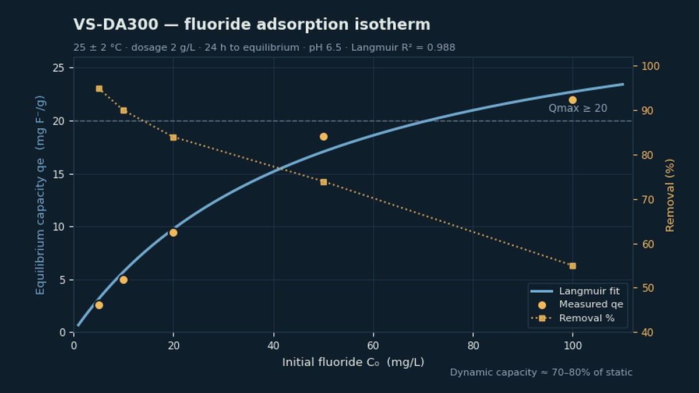

For industrial fluoride-bearing wastewater — polishing after precipitation, deep removal ahead of discharge limits, and adsorption units inside water-treatment projects. We supply material, data, screening and test support; engineering design and final discharge compliance stay with you or your local licensed partner.

We do not sell ordinary precipitated silica as a universal defluoridation agent. Silica-based fluoride adsorbents described in the published literature are typically iron-modified, aluminium-modified or composite systems: the fluoride activity comes from the functionalised surface and its active components, not from food-grade silica itself. Material identity is confirmed against the supplier TDS, an active-component statement and real water-sample data before any project discussion.
Scope is industrial fluoride-bearing wastewater only — not drinking water, municipal supply or household point-of-use treatment.
For high-concentration fluoride wastewater, precipitation and coagulation are normally used first to bring the fluoride load down. Adsorption and ion-exchange routes are better suited to the stage that follows — deeper removal and end-of-line polishing. This solution is positioned at that second stage, not as a replacement for front-end precipitation.
Vistasilica offers this track as VS-DA300, an alumina-modified functionalised silica fluoride adsorbent. It is neither a granular activated alumina nor a food-grade white carbon black: the active aluminium species is supported on a precipitated silica framework, which is the structural reason its capacity sits above conventional activated alumina on a per-gram basis.
| Component | Chemical form | Content | Function |
|---|---|---|---|
| Framework | Precipitated silica, SiO₂·nH₂O | ≥ 70% | High-surface-area support; disperses and anchors the active sites |
| Primary active component | Supported alumina / boehmite (Al₂O₃ / AlOOH) | 8–15% as Al₂O₃ | Surface hydroxyls exchange with F⁻ — the core adsorption site |
| Modifier | Alkali metal oxide (Na₂O) | ≤ 0.5% | Controls surface charge and pH buffering |
Removal mechanism. Ligand exchange (Al–OH + F⁻ → Al–F) accounts for over 80% of uptake, with electrostatic adsorption and anion exchange as secondary contributions.
| Property | Unit | VS-DA300 |
|---|---|---|
| SiO₂ content (dry basis) | % | ≥ 70 |
| Al₂O₃ content (active component, dry basis) | % | 8 – 15 |
| Na₂O content | % | ≤ 0.5 |
| BET specific surface area | m²/g | 250 – 350 |
| Particle size (granular) | mm | 0.5–1 / 1–3 (customisable; powder grade on request) |
| Bulk density (granular) | g/cm³ | 0.45 – 0.65 |
| Crush strength | N/particle | ≥ 25 (1–3 mm) |
| Attrition rate | % | ≤ 1.0 |
| Water absorption | % | ≥ 60 |
| pH (5% aq. suspension) | — | 6.0 – 8.0 |
| Loss on ignition (1000 °C) | % | ≤ 10 |
Test conditions: 25 ± 2 °C, dosage 2 g/L, 24 h contact to equilibrium, pH 6.5.
| Initial fluoride C₀ (mg/L) | Equilibrium capacity qe (mg F⁻/g) | Removal (%) |
|---|---|---|
| 5 | 2.6 | 95 |
| 10 | 5.0 | 90 |
| 20 | 9.4 | 84 |
| 50 | 18.5 | 74 |
| 100 | 22.0 | 55 |
Saturated static capacity (Langmuir Qmax) ≥ 20 mg F⁻/g; Langmuir monolayer model, R² ≥ 0.95. Dynamic capacity runs at roughly 70–80% of the static figure — size your column on the dynamic number, not this table.
| Condition | Behaviour |
|---|---|
| Optimal pH | 5 – 7 — matches typical industrial polishing-stage conditions |
| Usable pH range | 4 – 8.5, retaining ≥ 80% of capacity |
| Above pH 9 | Capacity drops markedly; front-end pH adjustment recommended |
| SO₄²⁻ / Cl⁻ / NO₃⁻ | Minor effect |
| HCO₃⁻ / CO₃²⁻ | Competitive inhibition; high-alkalinity water needs pH pre-adjustment or a higher dosage |
| PO₄³⁻ | Strong competition; phosphate-bearing streams should be segregated or dephosphorised first |
Regeneration cycle: soak in 4% NaOH for 2–4 h → rinse to neutral → activate in 5% HCl for 1–2 h → rinse to neutral pH.
| After | Capacity retained |
|---|---|
| 20 regeneration cycles | ≥ 85% |
| 50 regeneration cycles | ≥ 75% |
| Typical replacement interval | 1–2 years, depending on water chemistry and throughput |
20 / 25 kg paper sacks with PE liner, or 500 / 1000 kg bulk bags. Store sealed and dry at 5–30 °C, relative humidity ≤ 70%.
HG/T 3927 (general adsorbents), GB/T 22627-2014, GB 5749-2022 (effluent limit reference), REACH (EINECS 231-545-4, silicic acid).
Typical values. Figures above are representative of the grade. Performance on your effluent must be confirmed by jar test and dynamic column trial — a grade-specific specification sheet and COA are available on request.
Competition in fluoride removal is not mainly another silica-based adsorbent. The realistic alternatives are activated alumina, front-end calcium precipitation, anion-exchange resin and membranes. Functionalised silica-based fluoride media have not converged on globally standardised commercial grades the way oral-care silica has, so verifiable products and process routes are listed separately below rather than invented as like-for-like model numbers.
| Route | Verifiable representative products | Where customers use it | What to compare |
|---|---|---|---|
| Activated alumina | DI-tech / Weco Filters AAL-1CUFT; Tramfloc Activated Alumina; Actas® / Bee Chems Activated Alumina | Granular adsorbent media for fluoride and arsenic reduction; fixed bed, fluidised bed or cartridge formats | Dynamic breakthrough capacity, pH tolerance, competing-ion effect, media consumption and total project cost — not price per tonne alone |
| Calcium precipitation + coagulation | Lime / calcium hydroxide, calcium chloride — project-specific dosing, no single global grade | Front-end load reduction on high-fluoride streams, forming calcium fluoride sludge for solid-liquid separation | Not a route to displace. Functionalised silica adsorbent sits after it, for deep removal and polishing |
| Anion-exchange resin | Strong-base anion resin routes; grade depends on the customer's current brand, feed salinity and regeneration system | Low-concentration deep treatment, or where effluent limits are tight | Selectivity, regenerant consumption, competing-ion interference, spent regenerant handling and total operating cost |
| Reverse osmosis / membranes | Industrial RO / NF systems — benchmarked at system and element level, not as a single adsorbent grade | Projects removing multiple dissolved salts where the customer can handle the concentrate | Where membrane cost is high or concentrate disposal is difficult, adsorption can be the deep-treatment or hybrid option |
| Test dimension | What to watch | What it tells you |
|---|---|---|
| Fluoride removal | Effluent fluoride and removal rate across inlet concentrations | Whether the target discharge limit is within reach |
| pH tolerance | Stability of performance across your operating pH window | Whether additional pH adjustment is needed |
| Competing ions | Effect of bicarbonate, sulphate, chloride, phosphate and organics | Whether it holds up in the real effluent, not just synthetic water |
| Dynamic breakthrough capacity | Throughput before breakthrough, per unit mass of media | Replacement frequency and project economics |
| Pressure drop & particle strength | Whether the media powders, blinds or builds pressure too quickly | Whether it is operable at plant scale |
| Material safety & disposal | Active-component leaching, spent-media classification and disposal route | EHS and compliance cost |
| Cost per m³ treated | Media, pre-treatment, regeneration or replacement, sludge and disposal | Economics against alumina, resin, membrane and precipitation routes |
“This solution is not about replacing every fluoride-removal process with ordinary silica. For high-fluoride wastewater the load is normally cut by a front-end process first; what we bring is a functionalised silica-based adsorbent for deep removal after precipitation and for steady end-of-line control. We look at the water chemistry, the existing process and the target effluent first, then confirm fit through jar tests and dynamic column trials.”